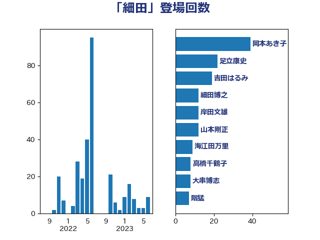

単語「細田」

| 岡本あき子 | 立憲民主党 | 39 回 |
| 足立康史 | 日本維新の会 | 22 回 |
| 吉田はるみ | 立憲民主党 | 19 回 |
| 細田博之 | 自由民主党 | 12 回 |
| 岸田文雄 | 自由民主党 | 12 回 |
| 山本剛正 | 日本維新の会 | 12 回 |
| 海江田万里 | 立憲民主党 | 9 回 |
| 高橋千鶴子 | 日本共産党 | 8 回 |
| 大串博志 | 立憲民主党 | 8 回 |
| 階猛 | 立憲民主党 | 7 回 |
| 道下大樹 | 立憲民主党 | 7 回 |
| 細田健一 | 自由民主党 | 7 回 |
| 山口俊一 | 自由民主党 | 7 回 |
| 城井崇 | 立憲民主党 | 7 回 |
| 小野寺五典 | 自由民主党 | 5 回 |
| おおつき紅葉 | 立憲民主党 | 5 回 |
| 石橋通宏 | 立憲民主党 | 4 回 |
| 宮沢洋一 | 自由民主党 | 4 回 |
| 丹羽秀樹 | 自由民主党 | 4 回 |
| 鈴木淳司 | 自由民主党 | 3 回 |
| 逢坂誠二 | 立憲民主党 | 3 回 |
| 西村智奈美 | 立憲民主党 | 3 回 |
| 泉健太 | 立憲民主党 | 3 回 |
| 森山浩行 | 立憲民主党 | 3 回 |
| 杉尾秀哉 | 立憲民主党 | 3 回 |
| 城内実 | 自由民主党 | 3 回 |
| 佐藤正久 | 自由民主党 | 3 回 |
| 上野賢一郎 | 自由民主党 | 3 回 |
| 上田清司 | 国民民主党 | 3 回 |
| 音喜多駿 | 日本維新の会 | 2 回 |
| 青山繁晴 | 自由民主党 | 2 回 |
| 谷田川元 | 立憲民主党 | 2 回 |
| 竹内譲 | 公明党 | 2 回 |
| 神田潤一 | 自由民主党 | 2 回 |
| 根本匠 | 自由民主党 | 2 回 |
| 松野博一 | 自由民主党 | 2 回 |
| 後藤祐一 | 立憲民主党 | 2 回 |
| 市村浩一郎 | 日本維新の会 | 2 回 |
| 小野泰輔 | 日本維新の会 | 2 回 |
| 古屋範子 | 公明党 | 2 回 |
| 麻生太郎 | 自由民主党 | 1 回 |
| 馬場伸幸 | 日本維新の会 | 1 回 |
| 重徳和彦 | 立憲民主党 | 1 回 |
| 辻元清美 | 立憲民主党 | 1 回 |
| 芳賀道也 | 国民民主党 | 1 回 |
| 笹川博義 | 自由民主党 | 1 回 |
| 田名部匡代 | 立憲民主党 | 1 回 |
| 牧原秀樹 | 自由民主党 | 1 回 |
| 河西宏一 | 公明党 | 1 回 |
| 東徹 | 日本維新の会 | 1 回 |
| 徳永久志 | 無所属 | 1 回 |
| 川田龍平 | 立憲民主党 | 1 回 |
| 岩屋毅 | 自由民主党 | 1 回 |
| 山田賢司 | 自由民主党 | 1 回 |
| 小川淳也 | 立憲民主党 | 1 回 |
| 小山展弘 | 立憲民主党 | 1 回 |
| 奥野総一郎 | 立憲民主党 | 1 回 |
| 塩川鉄也 | 日本共産党 | 1 回 |
| 古賀友一郎 | 自由民主党 | 1 回 |
| 中野洋昌 | 公明党 | 1 回 |
| 下条みつ | 立憲民主党 | 1 回 |